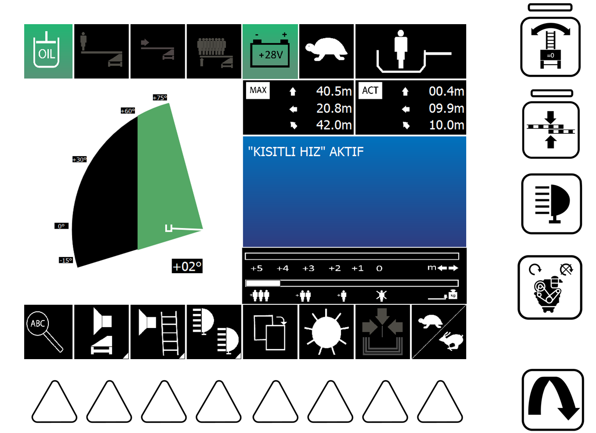

1
YETERLİ YAĞ BASINCI VAR.
2
TEK KİŞİLİK SINIR KALDI.
3
SEPET YÜK SINIRI AŞILDI TOPLAMA YAPILMASI GERKİYOR.
4
KÖPRÜ SİSTEMİ AKTİF.
5
AKÜ VOLTAJI.
6
ÜST YAPI KAPLUMBAĞA MODUNDA.
7
SEPETTEKİ ADAM SAYISI.
8
SEPETİN BULUNDUĞU AKTİF KONUM
9
UYARI – ARIZA – BİLGİ EKRANI
10
AĞIRLIĞA GÖRE KALAN MESAFE
11
HIZ MODU SEÇİMİ
12
OTOMATİK TOPLAMA
13
EKRAN PARLAKLIK AYARI
14
19 NUMARALI EKRANI DEĞİŞTİRME
15
AYDINLATMA AÇMA/KAPATMA
16
SEPET DİYAFON SESİ AÇMA/KAPATMA
17
OPERATÖR KOLTUĞU DİYAFON SESİ AÇMA/KAPATMA
18
9 NOLU EKRANDAKİ YAZAN ARAÇ ARIZALARINI GÖRME / SAYFA DEĞİŞTİRME
19
ÜST YAPI KONUM EKRANI
20
ÜST YAPININ MAKSİMUM GİDECEĞİ MESAFE
21
DÖNER TABLA DENGELEME SENSÖRÜ
22
BASAMAK HİZALAMA
23
AYDINLATMA AÇMA/KAPATMA
24
ARAÇ MOTORU START/STOP
25
OPERATÖR EKRANI SAYFA DEĞİŞTİRME
OPERATÖR EKRANI 1 AÇIKLAMALARI
1
ÜST YAPI İÇİN GEREKEN ÇALIŞMA BASINCININ OLDUĞUNU İFADE EDER. DEADMAN (GAZ) BASILDIĞI ZAMAN EKRANDA ÇIKAR.
2
ÇALIŞMA ESNASINDA SEPETİN BULUNDUĞU KONUMDA KAÇ KİŞİLİK AĞIRLIK KAPASİTESİ KALDIĞINI İFADE EDER.
3
MERDİVEN SETİNİN AĞIRLIK SINIRININ AŞILDIĞINI ARTIK SADECE TOPLAMA YAPMAMIZ GERKTİĞİNİ İFADE EDER.
4
ÇOK SAYIDA İNSAN KURTARMAMIZ GEREKTİĞİ DURUMLARDA DAHA HIZLI TAHLİYE YAPABİLMEK ADINA KURMUŞ OLDUĞUMUZ KÖPRÜ SİSTEMİNİ İFADE EDER.
6
ÜST YAPININ HANGİ HIZ MODUNDA ÇALIŞTIĞINI GÖSTERİR. 11 NOLU BUTONDAN MERDİVEN SETİNİN HIZININ DEĞİŞTİREBİLİRSİNİZ
7
SEPETE YÜKLEYECEĞİNİZ AĞIRLIK MİKTARINI KİŞİ HESABI İLE SEÇEREK MERDİVEN SETİNİN MAKSİMUM LİMİTİNİ OTOMATİK OLARAK AYARLAR BU SİMGE SEÇMİŞ OLDUĞUNUZ KİŞİ LİMİTİNİ GÖSTERİR. MERDİVEN SETİNİ DAHA FAZLA İLERİ SÜRMEK İSTERSENİZ (SEPETTEKİ AĞIRLIĞI AZALTMAK ŞARTIYLA) ADAM EKSİLTME BUTONUNA BASARAK MERDİVEN SINIRLARINI GENİŞLETEBİLİRSİNİZ.
8
SEPETİN AKTİF OLARAK HANGİ KONUMDA OLDUĞUNU GÖSTERİR. (SEPETİN YERDEN YÜKSEKLİĞİ - ARAÇTAN UZAKLIĞI - BOM UZUNLUĞU)
9
ÜST YAPI HAKKINDAKİ UYARI - ARIZA YADA BİLGİLERİ OKUYABİLECEĞİMİZ EKRAN 18 NUMARALI TUŞA BASILDIĞI ZAMAN BU EKRANDA AKTİF ARIZALAR GÖZÜKÜR.
10
SEPETE BİNEN AĞIRLIK MİKTARINA GÖRE MERDİVEN SETİNİN KAÇ METRE DAHA GİDEBİLECEĞİNİ HESAPLAR.
11
ÜST YAPININ HIZINI TAVŞAN (HIZLI) YADA KAPLUMBAĞA (YAVAŞ) AYARLAMANIZI SAĞLAR 6 NUMARALI SEMBOL ÜST YAPININ AKTİF OLAN HIZ MODUNU GÖSTERİR.
12
OTOMATİK TOPLAMA TUŞU (GAZA BASILDIĞI SÜRECE AKTİFTİR. GAZI BIRAKIRSANIZ HAREKETİ KESER).
13
EKRAN PARLAKLIĞINI AYARLAMANIZI SAĞLAYAN TUŞ.
14
19 NUMARALI ÜST YAPI KONUM EKRANINI DEĞİŞTİRİR. BU SAYDE ÜST YAPIYI 2D VEYA KUŞ BAKIŞI OLARAK HANGİ KONUMDA HANGİ AÇIDA OLDUĞUNU GÖREBİLİRİZ.
15
AYDINLATMALARI AÇAR/KAPATIR.
16
SEPET DİYAFON SESİNİ AÇAR/KAPATIR.
17
OPERATÖR KOLTUĞU DİYAFON SESİ AÇAR/KAPATIR.
18
BU TUŞ 9 NUMARALI EKRANI DEĞİŞTİREREK, ÜST YAPIDA OLUŞAN HERHANGİ BİR ARIZA, UYARI VEYA BİLGİ VARSA GÖRMEMİZİ SAĞLAR.
19
MERDİVEN SETİNİN AKTİF KONUMU VE GİDEBİLECEĞİ MAKSİMUM SINIRLARI GÖSTERİR 14 NUMARALI TUŞA BASMANIZ SONUCUNDA ÜST YAPIYI 2D VEYA KUŞBAKIŞI OLARAK GÖREBİLİRSİNİZ.
20
MERDİVEN SETİNİN MAKSİMUM KAÇ METRE GİDEBİLECEĞİNİ HESAPLAR.
21
DÖNER TABLA DENGELEMESİNİ İPTAL EDER. BU ÖZELLİK İPTAL EDİLMESİ DURUMUNDA DÖNER TABLA ZEMİN AÇISINA BAĞLI OLARAK YAMUK AÇILIR.
22
MERDİVENDEN ADAM İNDİRECEĞİMİZ ZAMAN MERDİVEN BASAMAKLARININ ARASININ BOŞ (EŞİT) OLMASI GEREKİYOR. BU TUŞA BASILMASI DURUMUNDA ARAÇ KENDİSİ BASAMAK ARALARINI EŞİTLEMEZ OPERATÖRÜN MERDİVEN SETİNİ ÜST YAPI HAREKETİ KESENE KADAR İLERİ YA DA GERİ SÜRMELİDİR.
23
MERDİVEN SETİ ÜZERİNDE BULUNAN AYDINLATMALARI AÇAR/KAPATIR.
24
ARAÇ MOTORU ÇALIŞIYORSA DURDURUR - ÇALIŞMIYORSA ÇALIŞTIRIR.
25
OPERATÖR EKRANINDA BULUNAN SAYFALAR ARASINDA GEÇİŞ YAPMAMIZI SAĞLAR.